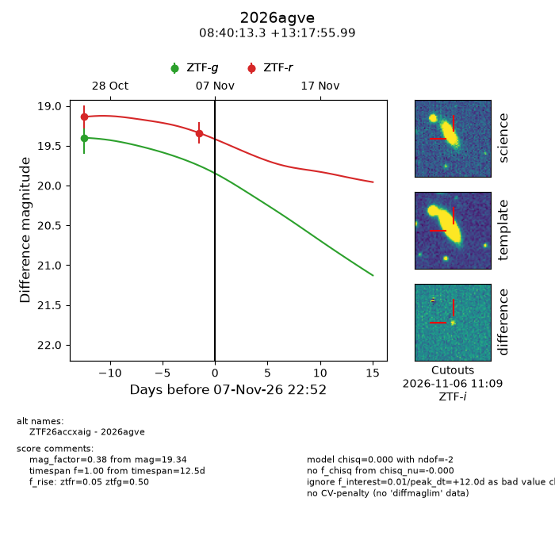
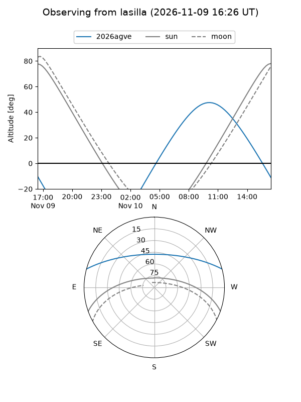
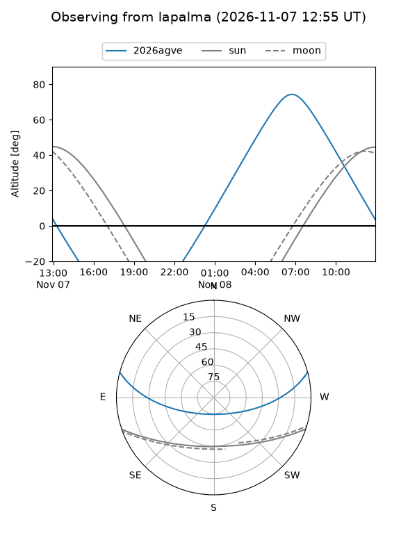
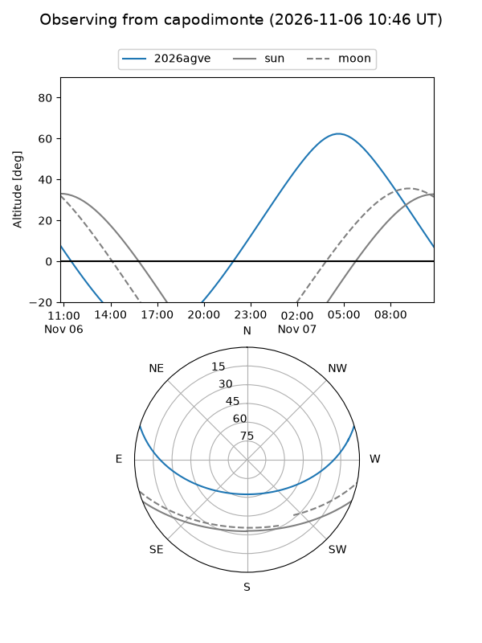
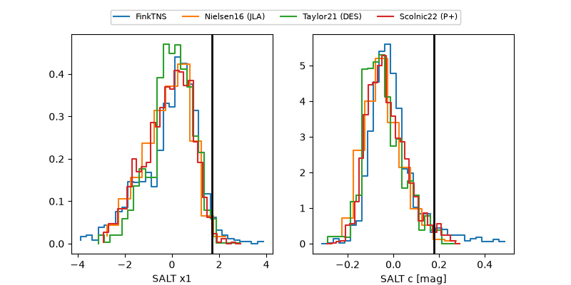

2026agve
Target 2026agve at 2026-11-07 22:54
Aliases and brokers:
FINK-ZTF: ztf.fink-portal.org/ZTF26accxaig
Lasair-ZTF: lasair-ztf.lsst.ac.uk/objects/ZTF26accxaig
ALeRCE-ZTF: alerce.online/object/ZTF26accxaig
YSE-PZ: ziggy.ucolick.org/yse/transient_detail/2026agve
TNS name: wis-tns.org/object/2026agve
Direct TNS query: direct search
alt names
ZTF26accxaig (ztf,fink_ztf)
2026agve (tns,yse)
Coordinates:
equatorial (ra, dec) = 130.0554,+13.29889
equatorial (HMS+DMS) = 08:40:13.30,+13:17:55.99
galactic (l, b) = (212.8053,+30.04885)
Flags:
peak dt: +12.0
Photometry:
last ztfg=19.40, ztfr=19.34
1 ztfg, 2 ztfr detections
Lightcurve

Visibility



Additional plots
